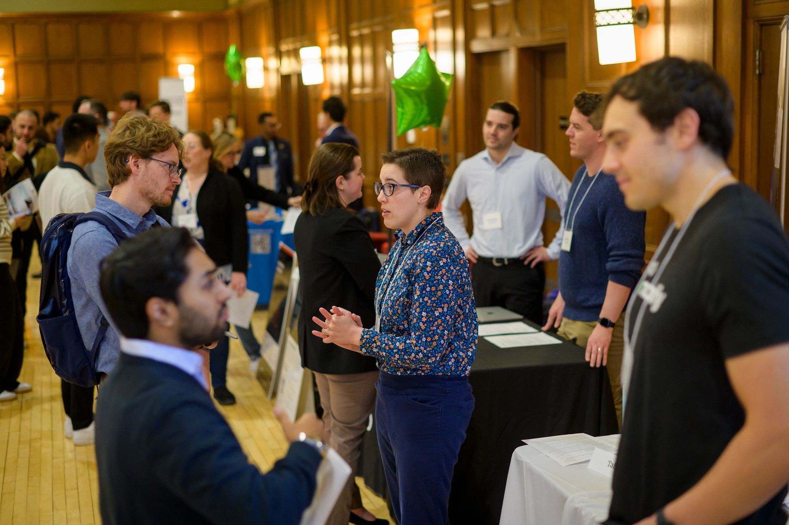
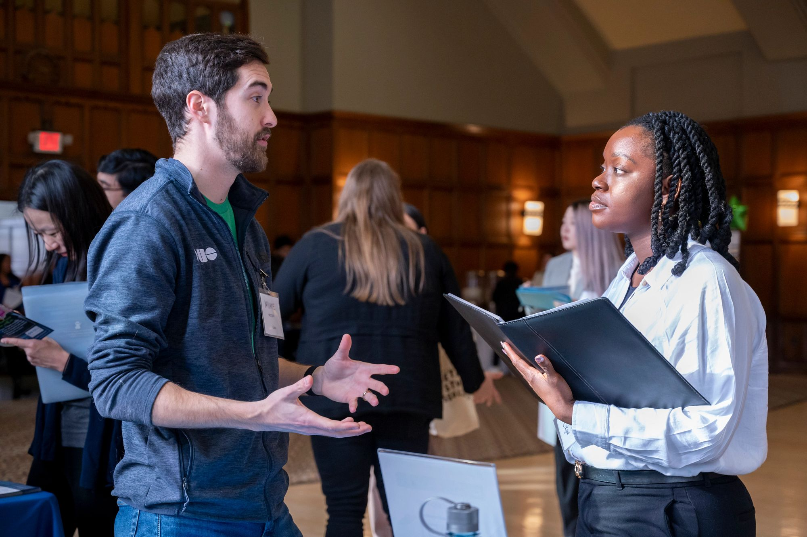

Build Your Network: Making Connections that Matter
Networking isn’t just about meeting people—it’s about building meaningful professional relationships that can help you learn, grow, and advance in your career. Whether you’re connecting with classmates, alumni, or professionals in the field, the right approach can open doors to internships, jobs, mentorships, and lifelong connections.
UMSI students are part of a strong professional community. This page provides practical strategies, templates, and resources to help you confidently reach out, engage, and build lasting connections.
Tip: Networking can feel intimidating, but most people are happy to help students who show curiosity and initiative. Start small and grow your network over time.

Networking Made Simple: Steps to Success
-
Identify Your Goals
Know why you want to network. Are you exploring career paths, seeking mentorship, or looking for internship opportunities? Clear goals help guide your conversations. -
Leverage Your Existing Network
Start with classmates, professors, alumni, and former colleagues. Use platforms like LinkedIn, UMSI alumni networks, and student groups to find connections. -
Reach Out Professionally
Craft concise, polite messages. Introduce yourself, explain why you’re connecting, and include a specific question or request. -
Prepare for Informational Interviews
Use the TIARA Method (Thank, Introduce, Ask, Respond, Action) to structure conversations and get valuable insights from professionals. -
Follow Up & Stay Connected
Always thank your contacts after a conversation. Maintain relationships by sharing updates, congratulating them on accomplishments, or checking in periodically.
Networking Resources
-
Building a List for Strategic Networking
The LAMP list is intended to help job seekers IDENTIFY and PRIORITIZE a list of target organizations for strategic networking before actively applying for jobs or internships. -
Intro to Making Connections Slides
Learn how to make connections with alumni and beyond. -
Elevator Pitch Rubric
Learn how to introduce yourself concisely and with confidence in an Elevator Pitch. -
Networking Outreach Email Examples
Examples of professional networking communication in different scenarios.
Need help or guidance? Book a session with a CDO Career Coach.

Networking FAQ
-
When should I start networking?
Now! Start building your network early—even before your first internship—so relationships grow over time. -
Do I need a formal introduction for every contact?
Not always. Sometimes mutual connections help, but polite, professional outreach works too. -
How do I keep in touch without being annoying?
Share updates, ask for advice, or congratulate contacts on their accomplishments. Keep interactions genuine and purposeful. -
Can networking help me find jobs?
Absolutely! Many internships and job opportunities are shared through personal connections before being posted publicly.